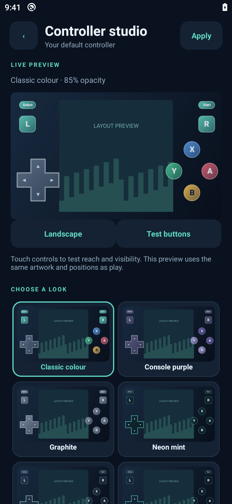
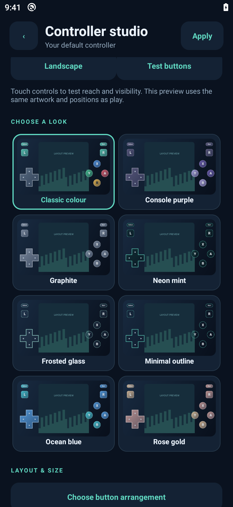
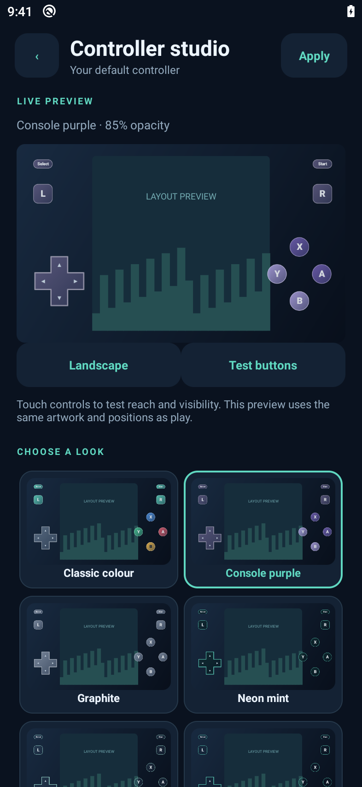
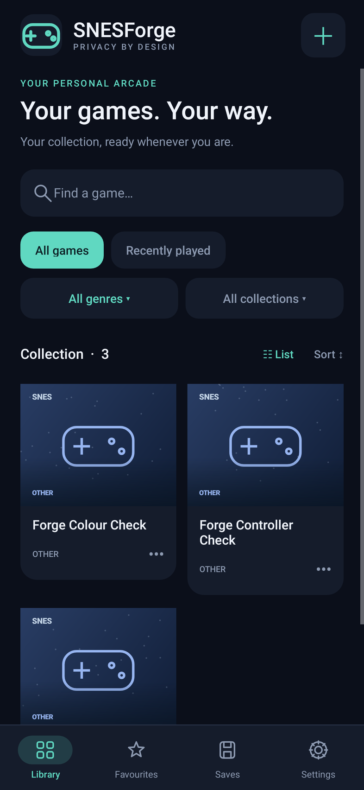
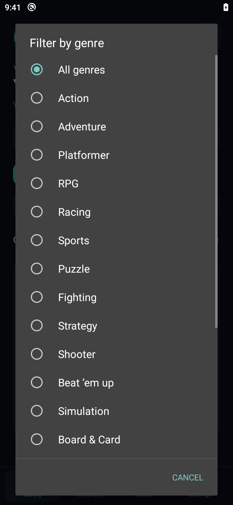
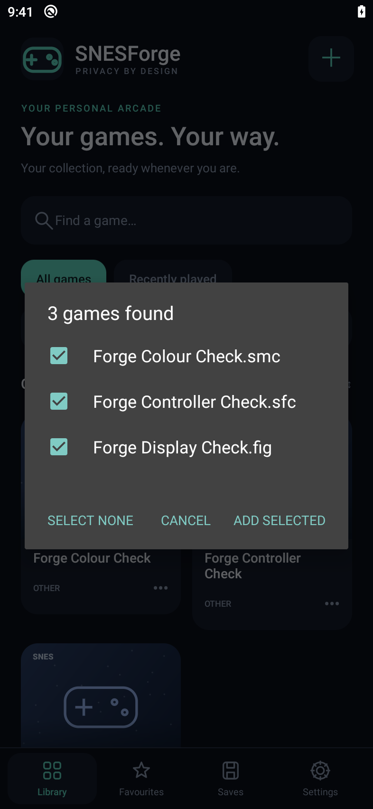
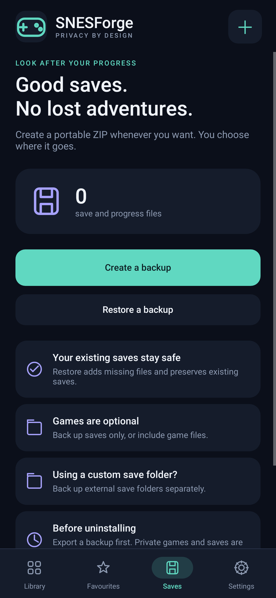
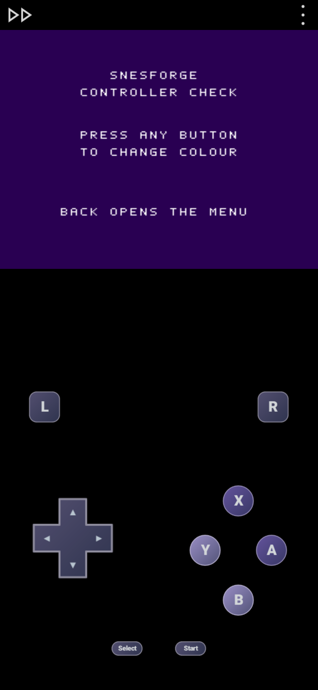
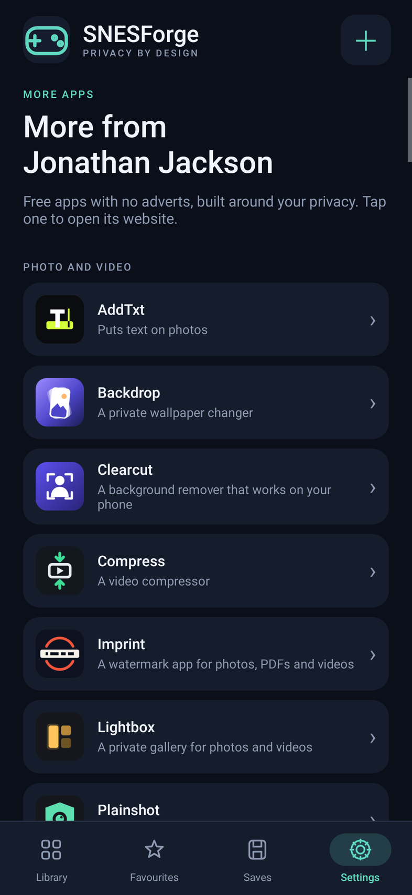
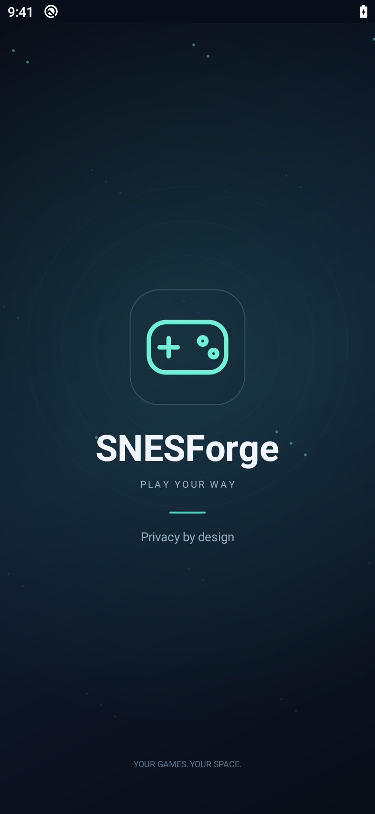

Your games. Your way.
SNESForge is a SNES emulator for Android with a home for your collection and a touch controller you design yourself. Pick a look, set the size and layout, and see it before you play.
It scans the folders you choose, sorts your games by genre with a catalogue built into the app, and keeps your saves safe with backups you control. There is no account, no adverts and no analytics.
SNESForge plays game files, and most SNES games are still under copyright. What the law says
- Version 2.0.1
- Android 10 or later
- 4.9 MB
Free, with nothing to unlock. No adverts, no account with the developer, no tracking. Compare or read the release notes.
Chrome may say the file might be harmful. It shows this for app files that do not come from Google Play. Choose Download anyway.

- No advertsNone in the app and none on this site.
- Nothing to buyEvery feature is free.
- Works offlinePlay, scanning and sorting never need the internet.
- No accountNothing to sign up for.
A look inside
These are real screens from the app. The games shown are SNESForge's own original test programs, not commercial games. Swipe or scroll sideways to see them all.









How it works
SNESForge has the Snes9x emulator engine built in, so it needs no other app. You bring the games.
Add your games
Tap + and choose game files, or scan a folder such as Games/SNES and its subfolders. Games are copied into the app; your originals stay where they are.
Make the controller yours
Open Controller Studio, pick one of eight looks and a layout, then set the size, opacity and position of every button. Give a game its own controller if you like.
Play and keep your progress
Tap a game to play. Use the in-game menu for save states, fast-forward and rewind, and make a backup ZIP of your saves whenever you want.
Everything is in, and all of it is free
Nothing below is held back for a paid tier, because there is no paid tier.
Controller Studio
- Eight looks
- Classic colour, Console purple, Graphite, Neon mint, Frosted glass, Minimal outline, Ocean blue and Rose gold, with your own accent colour for glass, neon and outline.
- Four starting layouts
- Classic diamond, Compact diamond, Two rows and Wide shoulders. Then drag any button where you want it, with portrait and landscape saved separately.
- Size and opacity
- Small, medium or large, a size slider, a size for each button and an opacity slider. Optional gentle vibration when you press.
- Presets and per-game controllers
- Save named presets, give any game its own controller, and open Controller Studio from the pause menu during play.
Your library
- Scan your folders
- Choose one or more folders and SNESForge looks through every subfolder, shows what it found and lets you pick what to add. Duplicates are spotted and skipped.
- Sorted by genre, offline
- A catalogue of 4,269 game versions built into the app matches games by checksum or name. Unsure matches stay as Other, and you can change any category.
- Tiles or a list
- Switch views, change the tile size, search, sort, mark favourites, see recently played and make your own collections.
- Covers
- Put an image next to a game with the same name before scanning, choose one from your phone, or switch on optional online box art. Games with no cover get an original illustration.
Playing
- Snes9x built in
- The Snes9x emulator engine is part of the app. No other emulator is needed.
- Touch or a gamepad
- Use the controller you designed, or pair a Bluetooth or USB gamepad and set it up in the emulator's options.
- Save states, fast-forward and rewind
- Manual save states, autosave, fast-forward, cheats and rewind from the in-game menu, plus video and sound settings.
Saves and moving phones
- Backups you control
- Export a ZIP of your saves, library, covers and controllers, with or without the games, to wherever you choose.
- A careful restore
- Restoring adds what is missing and never overwrites saves or settings you already have.
- Updates keep your data
- Each new version installs over the old one and keeps your library, saves and controllers.
Private by design
No servers
There is no account and no server. Your games, saves and settings stay on your phone.
No ads, no tracking
There is no advertising, analytics or tracking, in the app or on this site.
Online only when you ask
SNESForge goes online only if you switch on box art and ask for a cover, or tap Check for updates.
Use it within the law
SNESForge comes with no commercial games. Only add game files you have the right to use, such as homebrew games their makers give away, or games whose rights holder has given you permission. Downloading or sharing copies of commercial games without permission breaks UK copyright law.
- Copyright, Designs and Patents Act 1988, sections 16 and 17. Copying a copyright work, including downloading a copy of a game, without the rights holder's permission infringes copyright, and the rights holder can sue.
- Copyright, Designs and Patents Act 1988, section 107. Sharing or selling infringing copies of games, or distributing them to an extent that harms the rights holder, can be a criminal offence.
- What SNESForge does not do. It does not find, download or share games, and its online box art feature fetches cover pictures only, never games.
Laws differ in other countries. If you are not in the UK, the rules where you are apply. Read the terms of use.
Installing and updating
SNESForge is not on Google Play, so your phone asks a couple of extra questions the first time.
Download the app file
Tap Download on your phone. The file is called SNESForge.apk and is about 4.9 MB. If Chrome says the file might be harmful, choose Download anyway. First tick the box to say you will use the app within the law.
Allow the install
Open the file. The first time, Android asks you to allow your browser to install apps. Allow it, go back and tap Install. If Google Play Protect steps in, choose More details, then Install anyway.
Updating later
In Settings, under More, tap Check for updates. SNESForge asks GitHub for the newest version only when you tap it, and opens the download page if there is one. Make a backup in Saves, then install the new file over the old one: your library, saves and controllers stay in place.
Version 2.0.1, released 26 November 2026. See the release notes, or check your download.
Questions
Is SNESForge really free?
Yes. There is no paid version, no subscription and no adverts, and nothing in the app is locked.
Is it on Google Play?
No. SNESForge is a personal project and is downloaded from this site as an Android app file. It needs Android 10 or later.
Does it include games?
No commercial games are included. There is an original controller check program so you can try the controls and the display. Add game files you have the right to use.
Which files can I add?
SNESForge recognises .sfc, .smc, .swc, .fig, .mgd, .bs and .st game files, plus .zip, .7z and .rar archives. Recognising a file does not guarantee that a particular game will run.
Does it need the internet?
No. Playing, scanning folders, sorting by genre and designing controllers all work offline. It goes online only if you switch on optional box art and ask for a cover, or tap Check for updates.
Can I use small coloured buttons?
Yes. Style and size are set separately. Pick a coloured style, choose a smaller size and adjust individual buttons. You can also change the layout and the opacity.
Can each game have a different controller?
Yes. Keep a default controller and give any game its own. Named presets can be reused, with separate positions for portrait and landscape.
Will every game be sorted automatically?
The built-in catalogue covers 4,269 regional versions and revisions. Checksum and exact-name matches are tried first, then careful near matches. Homebrew, prototypes and modified games may need a category chosen by hand.
Can it scan my whole phone?
It scans the folders you choose and their subfolders. Android does not let apps choose the whole storage or other apps' folders, so a folder such as Games/SNES works best.
What happens when I uninstall?
Android deletes the app's copies of your games, its saves and its settings. The original files in the folders you scanned stay there. Make a backup in Saves before uninstalling or moving phones.
Are backups encrypted?
No. Backups are ordinary ZIP files, so keep them somewhere you trust. Restoring a backup does not switch on online box art or bring back folder permissions.
Can I update from an older version?
Yes. Make a backup, then install the new file over the old one. Your library, saves and controllers are kept.
Does it work on an iPhone?
No. SNESForge is for Android phones and tablets only.
Who made it?
SNESForge is made by Jonathan Jackson, an independent developer in the United Kingdom. Its emulator engine is Snes9x EX+ by Robert Broglia, with the Snes9x core by the Snes9x team.
Make it yours
Free, with no adverts and nothing to unlock. Made by the developer of several other free Android apps: see them all.